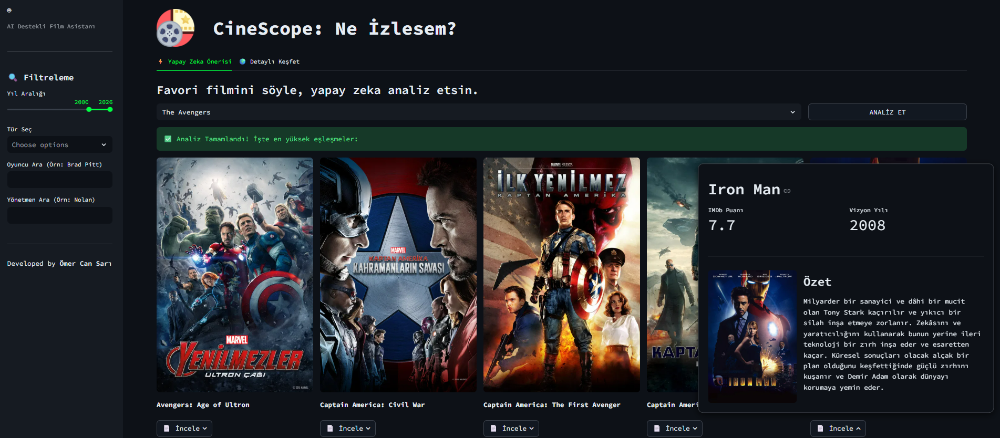
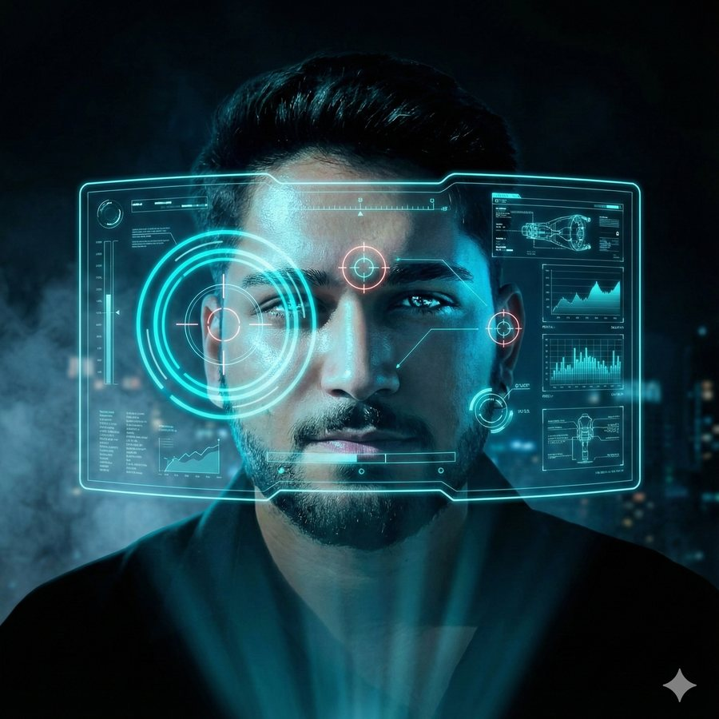

YAPAY ZEKA
CineScope

Veri bilimi algoritmaları ve Cosine Similarity kullanarak geliştirilmiş, kullanıcının izleme geçmişine dayalı kişiselleştirilmiş film öneri sistemi.
Teknolojiler: Python, Pandas, Scikit-Learn
GitHubSYSTEM STATUS: ONLINE
İstatistik & Bilgisayar Bilimleri

y = ax + b
Selamlar, ben Ömer Can Sarı. Teknolojinin sadece kullanıcısı olmakla yetinmeyip, arka plandaki çalışma mantığını öğrenmeye çalışan bir öğrenciyim. Şu anki temel amacım, yazılım geliştirme ve veri bilimi dünyasını tanımak. Henüz her şeyin başındayım ve karmaşık tanımlar yerine, işin temel mantığını kavramaya öncelik veriyorum. Özellikle büyük veri yığınlarının nasıl anlamlı bilgilere dönüştüğü konusu üzerine okumalar yapıyor ve denemelerle öğrenmeye çalışıyorum. Burada sektör standartlarında profesyonel işler veya kusursuz analizler görmeyi beklemeyin. Paylaştığım projeler, okulda öğrendiğim teorik bilgileri kendi çabamla pratiğe dökmeye çalıştığım kişisel notlarımdır. Eksiklerimle ama en çok da öğrenme isteğimle buradayım.
Teknik
Eğitim Deneyim  Veri bilimi algoritmaları ve Cosine Similarity kullanarak geliştirilmiş, kullanıcının izleme geçmişine dayalı kişiselleştirilmiş film öneri sistemi. Teknolojiler: Python, Pandas, Scikit-Learn TinyML tabanlı taşınabilir akıllı gözlük ile gerçek zamanlı engel tespiti ve sesli rehberlik sağlayan donanım ve yazılım projesi. Teknolojiler: Raspberry Pi, YOLOv8, Python Frekansları açtım, sinyal bekliyorum.Eğitim & Deneyim
Öne Çıkan Projeler
YAPAY ZEKA
CineScope
GÖMÜLÜ SİSTEM / CV
Akıllı Gözlük

Referanslar
Referans Mektubu
Yeni sekmede açİletişim